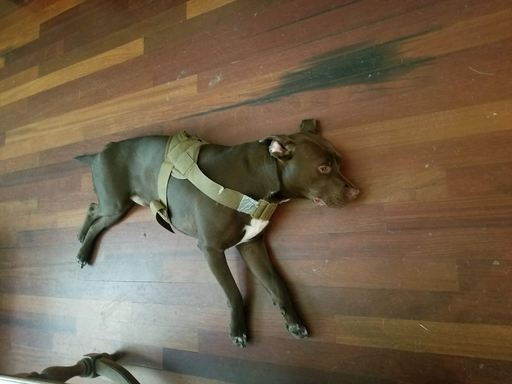

So this is my first dog ever: Rex! Click to see Rascal!
So my first two dogs were adopted from the Houston SPCA. I volunteered there for a time and enrolled into their program of fostering dogs who were hurt or had been there too long. My first foster was Rex who became my first pet! Next up I wanted to make sure he always had a friend when I was at work so I fostered another dog and Rascal came into the picture!
I had them for 5 years and eventually met Buddy! Buddy was a stray just roaming the street. He is a bigger dog and I just wanted to make sure initially he would be sent to a good home. Well, over time he grew on me and has become a part of my family!
If you are interested in helping out with animals you can visit the Houston SPCA website for more information!